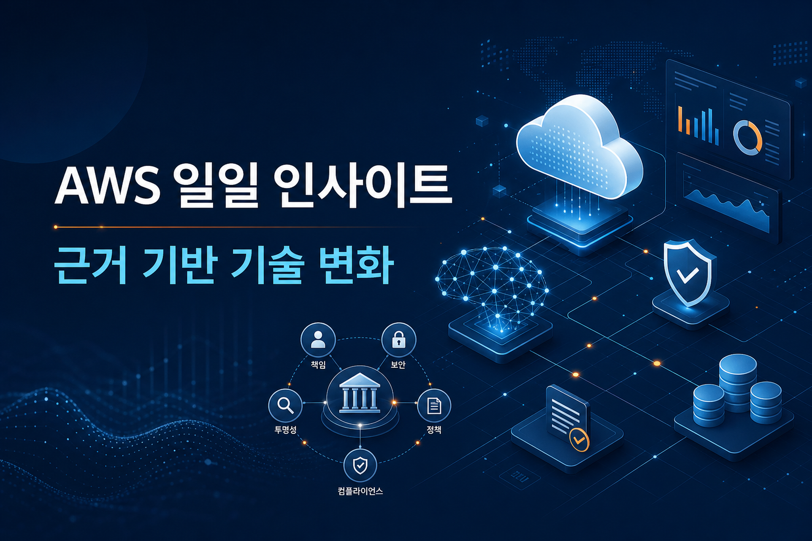
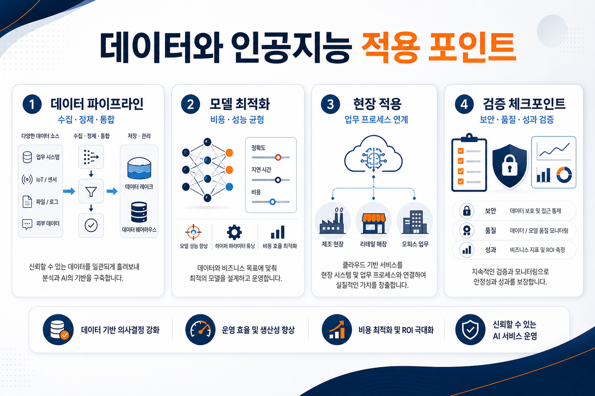
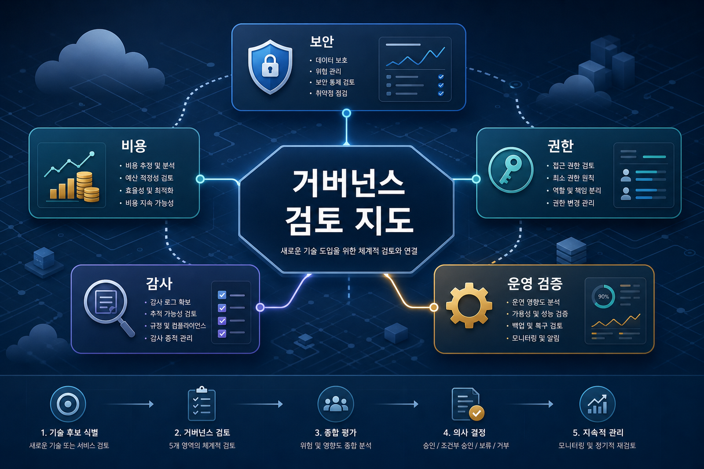

아마존웹서비스 코리아 기술 블로그 · 2026-06-10
시뮬레이션-현실 전환으로 물리 인공지능을 가능하게 하는 핵심 엔진
로봇과 물리 환경 인공지능을 다룰 때 실제 데이터와 시뮬레이션 데이터의 상호 전환 품질이 중요하다는 점을 확인했습니다.
원문 보기아마존웹서비스 공식 블로그 일일 수집 분석
이번 실행에서 신규 저장된 문서를 기본 입력으로 사용했습니다. 관찰된 사실과 원문 근거를 바탕으로 기회, 리스크, 검토 포인트를 분리해 정리했습니다.

아마존웹서비스 코리아 기술 블로그 · 2026-06-10
로봇과 물리 환경 인공지능을 다룰 때 실제 데이터와 시뮬레이션 데이터의 상호 전환 품질이 중요하다는 점을 확인했습니다.
원문 보기아마존웹서비스 코리아 기술 블로그 · 2026-06-10
온톨로지와 소형언어모델 조합으로 비용과 정확도 사이의 균형을 맞추는 기업형 챗봇 접근이 확인되었습니다.
원문 보기아마존웹서비스 코리아 기술 블로그 · 2026-06-10
산업별 부정 행위 탐지에는 범용 모델보다 업무 맥락을 반영한 미세조정과 가드레일 설계가 중요합니다.
원문 보기아마존웹서비스 뉴스 블로그 · 2026-06-11
새 프로세서 기반 인스턴스 출시는 성능과 비용 효율을 다시 비교해야 하는 인프라 검토 이벤트입니다.
원문 보기아마존웹서비스 머신러닝 블로그 · 2026-06-11
전용 가속기 최적화 과정에서 개발 도구의 자동화가 커널 튜닝 부담을 줄일 수 있음을 보여줍니다.
원문 보기아마존웹서비스 머신러닝 블로그 · 2026-06-11
장비 수리처럼 절차와 도구 호출이 필요한 업무에서 에이전트 실행 환경과 지식 연결이 중요해지고 있습니다.
원문 보기수집된 글은 인공지능 적용이 단일 모델 선택 문제가 아니라 데이터 표현, 실행 환경, 하드웨어 최적화, 업무별 가드레일을 함께 설계하는 문제임을 보여줍니다. 특히 현장 장비 수리와 부정 반품 탐지처럼 업무 절차가 분명한 영역에서는 모델 응답 품질뿐 아니라 도구 호출, 감사 가능성, 예외 처리 기준이 중요합니다.

새 인스턴스와 전용 가속기 최적화는 성능 대비 비용을 다시 계산할 수 있는 계기를 제공합니다. 도메인 특화 챗봇과 장비 수리 지원 사례는 반복 업무의 지식 연결 방식을 개선할 가능성을 보여줍니다.
물리 환경 데이터와 산업별 부정 탐지는 오탐·누락·책임 소재가 중요한 영역입니다. 따라서 모델 성능 지표만으로는 충분하지 않고, 데이터 출처와 예외 대응 기준을 함께 검증해야 합니다.
서비스별 리전, 요금, 권한 모델, 감사 로그, 기존 시스템 연동 방식을 원문과 공식 문서 기준으로 확인해야 합니다. 수집 자료만으로 확인되지 않는 수치 효과는 확인 필요로 분리해야 합니다.
한국 기업은 개인정보, 산업 규제, 비용 승인 절차가 복합적으로 작동하므로 신규 인공지능 기능을 곧바로 확대하기보다 업무 단위 검증과 통제 항목을 먼저 정의하는 편이 안전합니다. 이번 자료에서 특정 산업별 성과 수치나 국내 규제 적합성은 직접 확인되지 않았으므로, 실제 적용 전 추가 검토가 필요합니다.

기능 적합성보다 먼저 데이터 접근권한, 비용 계측, 감사 가능성, 장애 대응 절차를 확인합니다.
원문 근거가 명확한 기능과 아직 확인 필요인 해석을 분리해 투자 판단의 불확실성을 낮춥니다.
| 출처 | 제목 | 발행일 | 링크 |
|---|---|---|---|
| 아마존웹서비스 코리아 기술 블로그 | 시뮬레이션-현실 전환으로 물리 인공지능을 가능하게 하는 핵심 엔진 | 2026-06-10 | 원문 보기 |
| 아마존웹서비스 코리아 기술 블로그 | 신한카드, 온톨로지와 소형언어모델로 고효율 인공지능 챗봇 구축 | 2026-06-10 | 원문 보기 |
| 아마존웹서비스 코리아 기술 블로그 | 이커머스 부정 반품 요청 차단: 아마존 노바 미세조정 기반 산업 특화 가드레일 | 2026-06-10 | 원문 보기 |
| 아마존웹서비스 뉴스 블로그 | 그래비톤5 기반 아마존 이씨투 엠나인지 및 엠나인쥐디 인스턴스 출시 | 2026-06-11 | 원문 보기 |
| 아마존웹서비스 머신러닝 블로그 | 뉴런 에이전틱 개발로 트레이니움 최적화 수작업 줄이기 | 2026-06-11 | 원문 보기 |
| 아마존웹서비스 머신러닝 블로그 | 베드록 에이전트코어 기반 장비 수리 지원 인공지능 지원 도우미 구축 | 2026-06-11 | 원문 보기 |